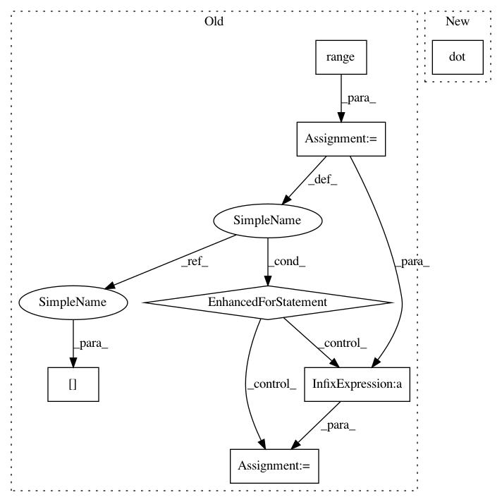

c57ce7f891a91592354b1685d37f2aee39f193f2,libact/query_strategies/active_learning_by_learning.py,Exp4P,exp4p,#Exp4P#,160
Before Change
ask_idx = self.invert_id_idx[ask_id]
rhat[ask_idx] = reward / p[ask_idx]
for i in range(self.N):
yhat[i] = np.dot(advice[i], rhat)
vhat[i] = np.sum(advice[i] / p)
self.w[i] = self.w[i] * np.exp(
self.pmin / 2 * (yhat[i] + vhat[i]*np.sqrt(
np.log(self.N/self.delta) / self.K / self.T)
)
)
self.t += 1
raise StopIteration
After Change
// np.log(self.N/self.delta) / self.K / self.T)
// )
// )
yhat = np.dot(advice, rhat)
vhat = np.sum(advice / np.tile(p, (self.N, 1)), axis=1)
self.w = self.w * np.exp(
self.pmin / 2 * (yhat + vhat*np.sqrt(
np.log(self.N/self.delta) / self.K / self.T)
In pattern: SUPERPATTERN
Frequency: 3
Non-data size: 7
Instances
Project Name: ntucllab/libact
Commit Name: c57ce7f891a91592354b1685d37f2aee39f193f2
Time: 2015-10-07
Author: yangarbiter@gmail.com
File Name: libact/query_strategies/active_learning_by_learning.py
Class Name: Exp4P
Method Name: exp4p
Project Name: ntucllab/libact
Commit Name: c57ce7f891a91592354b1685d37f2aee39f193f2
Time: 2015-10-07
Author: yangarbiter@gmail.com
File Name: libact/query_strategies/active_learning_by_learning.py
Class Name: Exp4P
Method Name: exp4p
Project Name: data61/python-paillier
Commit Name: 103e31b4a2518797606d3b93440740df0532770d
Time: 2017-06-20
Author: giorgio.patrini@anu.edu.au
File Name: examples/federated_learning_with_encryption.py
Class Name: Client
Method Name: compute_gradient
Project Name: casparwylie/Perceptron
Commit Name: 6958933414eb3d632d3db3848e17049d30640bca
Time: 2016-12-02
Author: casparwylie@Caspars-iMac.default
File Name: nn.py
Class Name: neural_network_handler
Method Name: learn_feed_forward